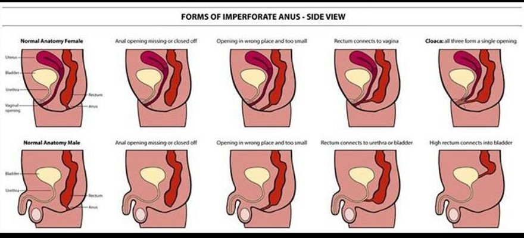
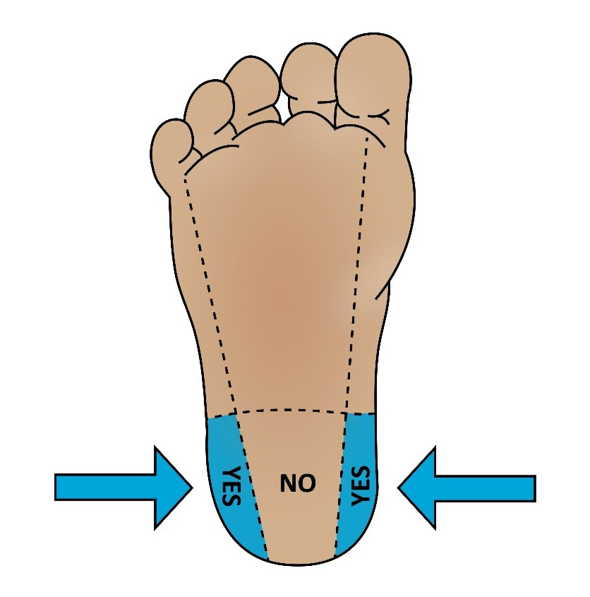
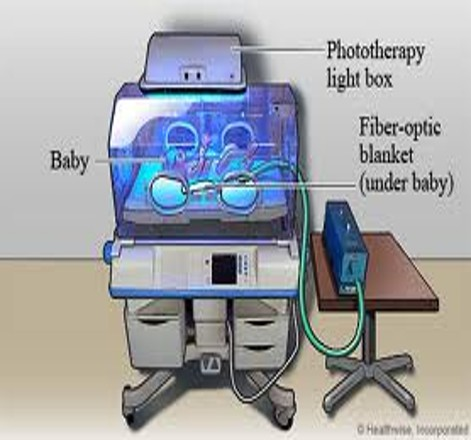

Week 6 · Topic 2
Newborn Assessment & Care II
Newborn Reflexes
| Reflex | How to Elicit It | Disappears |
|---|---|---|
| Tonic neck (fencer) | Supine, turn the head to one side — the same-side extremities straighten, the opposite side flexes | ~4 months |
| Palmar grasp | Stimulate the palm — the newborn grasps | ~4–6 months |
| Plantar grasp | Press the ball of the foot — the toes curl | ~9 months–1 year |
| Moro (startle) | A loud noise or lowering the baby — arms/hands go outward, knees flex, then arms return to the chest and the fingers form a "C" | ~6 months |
| Rooting | Stroke the side of the mouth/cheek — the baby turns toward it to suck (harder to elicit if recently fed) | ~4 months |
| Sucking | Object in the mouth elicits sucking | ~4 months |
| Babinski | Stroke the outer edge of the sole then under the toes — the toes flare (in an infant); later they curl | Changes ~1 year |
| Stepping (dancing) | Hold upright with one foot on a flat surface — the baby "walks" | ~3–4 months |
Elimination
Bladder
- ~93% void by 24 hours; 100% within 2 days
- Initial bladder volume is only 6–44 mL — it doesn't hold much
- Notify the provider if the newborn has not voided by 40 hours
- Newborns void 5–25 times/day — on average look for 6–8 wet diapers/day
Bowel
- Stool varies with feeding: breastfed babies may stool less often than formula-fed
- Meconium is thick and sticky — make sure to clean it off well
- Imperforate anus is a possible anomaly

Gestational Age & Size Classifications
| Classification | Gestational Age |
|---|---|
| Preterm | 20 weeks–36 6/7 weeks |
| Late preterm | 34–36 6/7 weeks |
| Early term | 37–38 6/7 weeks |
| Full term | 39–40 6/7 weeks |
| Late term (postdates) | 41–41 6/7 weeks |
| Post-term | 42 weeks or greater |
| By Birth Weight | Weight |
|---|---|
| Low birth weight | Less than 2,500 g |
| Very low birth weight | Less than 1,500 g |
| Extremely low birth weight | Less than 1,000 g |
| By Growth Percentile | Where They Fall |
|---|---|
| Small for gestational age (SGA) | Below the 10th percentile |
| Appropriate for gestational age (AGA) | Between the 10th and 90th percentile |
| Large for gestational age (LGA) | Above the 90th percentile (or > 4,000 g) |
IUGR & Twin-Twin Transfusion
| Type of IUGR | What's Affected |
|---|---|
| Symmetric IUGR | Weight, length, and head circumference are all affected |
| Asymmetric IUGR | The head is normal but the body is disproportionately smaller (< 10th percentile). Higher risk of respiratory distress, intraventricular hemorrhage, sepsis, and neonatal death |
Twin-twin transfusion syndrome is a rare condition in identical twins sharing a placenta: blood shunts from one twin to the other. The donor twin loses blood; the recipient twin receives it.
Reasons a Preterm Birth May Be Needed
- Maternal: diabetes, chronic hypertension, preeclampsia, abruption/previa, gallbladder or heart disease, VTE, asthma, HIV/AIDS, active herpes, obesity, maternal age
- Fetal: IUGR, poly- or oligohydramnios, fetal hydrops, birth defects, twin gestation
Neonatal Resuscitation
Start by asking: is the baby term or preterm? Good tone? Breathing or crying? Then follow the protocol.
| Step | Action |
|---|---|
| Always start | Stimulate (and warm/position/clear airway) |
| Heart rate < 100 | Positive-pressure ventilation (PPV) and apply a pulse ox |
| Still < 100 | Consider intubation for an advanced airway |
| Heart rate < 60 | Inadequate to perfuse — PPV WITH chest compressions |
Glucose & Gestational-Age Assessment
A heel stick checks glucose when the baby is at risk — a diabetic mother, a large or small baby, or a jittery baby. Want the glucose greater than 40.

Gestational-age assessment (e.g., the Ballard scale) scores neuromuscular and physical maturity — a higher score = more mature. Neuromuscular items include posture (fully flexed arms/knees/hips scores high), square window, and arm recoil; physical items include skin, lanugo, breast buds, eyes/ears, and genitals.
Routine Newborn Medications & Prophylaxis
| Medication | Why & How |
|---|---|
| Vitamin K (injection) | Newborns lack the intrinsic gut bacteria needed to synthesize vitamin K until the gut is colonized, so they are at risk of bleeding. Breast milk doesn't have enough. There's a bleeding risk (brain and organs) for up to 6 months, especially before solid food |
| Erythromycin eye ointment | Prevents conjunctivitis from chlamydia or gonorrhea. Apply a thick strip inner to outer canthus, preferably within 30 minutes of birth (can wipe the eye inner-to-outer first). Parents may ask to delay it ~1 hour for bonding/eye contact |
Bathing & Cord Care
First Bath & Bathing
- Wait at least ~6 hours after birth — prevents cold and allows skin-to-skin/family time
- Bathe only 1–2 times per week; use only water on the face
- Sponge baths until the cord stump falls off (1–3 weeks); don't bathe right after a feeding
- Do it under a warmer: start at the face, then eyes/mouth and the rest of the body, genitals last; dry after washing the back; clean folds/creases
Umbilical Cord Care
- Keep the clamp on until the cord is dried; keep it clean, dry, and out of the diaper
- Sometimes a triple-dye antiseptic (turns it purple) is used; sometimes it's just left to dry
- Usually falls off in ~7–10 days (can take a couple of weeks)
Periods of Reactivity
Timings are for your information — not memorization.
| Period | Timing | What's Happening |
|---|---|---|
| First period of reactivity | ~30 minutes after birth | Awake, active, hungry, strong suck — a great time to promote bonding and breastfeeding |
| Sleep phase | ~2–4 hours | Heart rate and respiratory rate may decrease |
| Second period of reactivity | ~4–6 hours | Awake and alert; heart rate and respiratory rate return to normal |
Infant Nutrition
Breastfed babies feed every 2–3 hours, on demand; formula-fed babies about every 3–4 hours. Remember supply and demand — nursing, kangaroo care, and pumping stimulate the breast, so more stimulation increases milk supply.
Feeding Points
- Signs of readiness to feed: rooting reflex, sucking reflex, hand-to-mouth, head bobbing
- Feed when awake and alert; start breastfeeding as soon as possible (recovery-room period), baby on mom's chest
- Burp between breasts, or halfway through a formula feeding
- Support the head — it will bob around
Breastfeeding vs. Formula Feeding
| Feature | Breastfeeding | Formula (Iron-Enriched) |
|---|---|---|
| Nutrition | Species-specific and efficiently absorbed, with an ideal balance of nutrients; iron is highly bioavailable; composition changes with gestational age and stage of lactation. Long-term decreased incidence of diabetes, cancer, obesity, and asthma | Made from bovine milk and/or plant sources; lower bioavailability means higher concentrations are needed, and the nutritional value doesn't vary — adequacy depends on correct preparation/dilution |
| Immunity | Immunoglobulins, enzymes, and leukocytes protect against pathogens — lower rates of UTI, otitis media, and other infections. Hypoallergenic, with minimal risk of protein allergy | No anti-infective properties — linked to more GI and respiratory infections; bacterial contamination is possible during preparation and storage; cow's-milk protein allergy is relatively common |
| Who Sets the Amount | The infant decides how much; may feed more often, since breast milk digests faster | The caregiver decides — overfeeding can happen if the baby is pushed to empty the bottle; feeds less often, since formula digests more slowly |
| Mother | Faster return to pre-pregnancy weight; lower risk of breast and ovarian cancer. She must be available to feed, or pump ahead | Either parent can feed and she need not be present — the option when breast milk isn't available (maternal illness, medications, lactation failure) |
| Cost & Convenience | Always the right temperature, with no preparation time | Roughly $1,200/year (standard) or $2,500/year (hypoallergenic), plus bottles, nipples, and cleaning; must be purchased and prepared |
Caloric & Fluid Needs
| Newborn Need | Amount |
|---|---|
| Calories | 45.5–52.5 kcal/lb/day, or 100–115 kcal/kg/day |
| Fluid | 64–73 mL/lb/day, or 140–160 mL/kg/day |
| Weight gain (first 6 months) | Formula-fed 1 oz/day; breastfed 0.5 oz/day |
Jaundice & Phototherapy
Jaundice is yellow coloring of the skin or sclera from increased bilirubin (breakdown of red blood cells). Normal levels are about 4–6 mg before jaundice appears.
| Type | Timing & Management |
|---|---|
| Pathologic jaundice | Bad — appears within the first 24 hours of life. Likely needs phototherapy and possibly a blood transfusion |
| Physiologic jaundice | Appears after the first 24 hours. Increase feedings during this time; may need phototherapy |

Neonatal Abstinence Syndrome (NAS)
60–90% of newborns exposed to opiates in pregnancy have some NAS. Substance use disorder is one of the most commonly missed conditions in pregnancy. NAS complications include respiratory distress, jaundice, congenital anomalies (from teratogen exposure), prematurity, low birth weight, poor feeding/failure to thrive, and family disruption.
Clinical Manifestations
| System | Signs |
|---|---|
| Central nervous system | High-pitched cry; hyperirritability, difficult to console, restlessness; increased muscle tone; exaggerated reflexes; tremors, myoclonic jerks; seizures; sneezing, hiccups, yawning; short, unquiet sleep |
| Gastrointestinal | Disorganized, vigorous suck; excessive sucking; vomiting; poor weight gain; sensitive gag reflex; diarrhea; poor feeding (less than 15 mL on the first day of life, or taking longer than 30 minutes per feeding) |
| Autonomic | Stuffy nose, sneezing; yawning; mottled; tachypnea (greater than 60 breaths/min when quiet); sweating; hyperthermia |
| Cutaneous | Excoriated buttocks, knees, and elbows; facial scratches; pressure-point abrasions |
Finnegan Scoring Tool
- Scores the severity of 21 of the most frequent opioid-withdrawal symptoms; the total is the sum of each symptom's score
- Dynamic, not static — all signs seen during the interval count toward that period's total
- Usually start scoring ~2 hours after birth for a baseline, then every 4 hours after each feeding
- Scores of 8 or higher → score every 2 hours until NAS medication is started
| Treatment | Detail |
|---|---|
| Supportive care (first) | Skin-to-skin, safe swaddling, gentle waking, a quiet, low-stimulation environment (dim lights, calm music, massage), cluster care with long rest periods, and parental involvement/rooming-in when appropriate |
| Breastfeeding | Encouraged — it can delay onset and decrease severity of withdrawal and reduce the need for medication. Moms on methadone or buprenorphine should be encouraged to breastfeed |
| Pharmacologic (if needed) | Initiated in the NICU; match the drug to the causative agent. Morphine or methadone are the most common first-line; buprenorphine has reduced length of stay by ~42% in some infants; adjuncts include phenobarbital or clonidine |
Discharge Procedures & Screening
| Procedure | What to Know |
|---|---|
| Hearing screen | Done before discharge; fluid in the ears can cause a failure, so the test may need repeating |
| PKU (newborn screen) | Drawn after at least 24 hours of breast milk/formula, by heel stick. Screens for phenylketonuria — untreated, unmetabolized phenylalanine leads to progressive intellectual disability; these babies need a low-phenylalanine formula. Kentucky's panel screens for > 59 conditions, including sickle-cell disease, cystic fibrosis, and congenital hypothyroidism |
| Hepatitis B vaccine | Given before discharge |
| Circumcision | Provider preference of device (Gomco clamp, Plastibell, or Mogen clamp). Numb with lidocaine at the base; give sucrose water for comfort. After: use plenty of petroleum jelly at each diaper change so the raw skin doesn't stick to the diaper; watch for excess bleeding or drainage |
Home Safety & Teaching
Before Going Home
- Swaddling: wrap like a burrito — arms tight, legs loose (room to kick)
- Back to sleep is the safest position
- Pediatrician appointment/weight check within 1–2 days of discharge
- Encourage infant CPR classes
- Car seat rear-facing (facing the back of the seat), in the back seat — parents install it, not the hospital
Prematurity & Corrected Age
The more premature the infant, the greater the effects on growth and development, so age is corrected for prematurity when development is evaluated. Example: a baby born at 32 weeks and evaluated 1 month later is treated as ~36 weeks; at 6 months of life, the corrected age is ~4 months, and responses are judged against a 4-month-old's. A preterm baby is usually discharged around 36–40 weeks post-conception age.
Self-Test Flashcards
Click a card to flip it and check your answer.